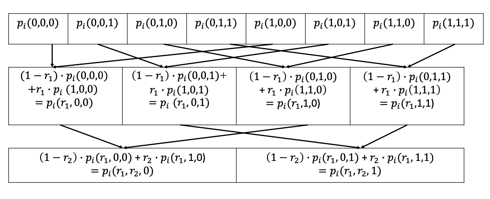

Sumcheck is introduced in Chapter 4 of Proofs, Arguments, and Zero-Knowledge as a core building block of Interactive Proofs. The dense chapter outlines the power of Sumcheck, a tool Thaler describes as “the hammer” that makes many Interactive Proof problems look like a nail. Included, are details of how Sumcheck can be used to count triangles then prove the computation with little additional work. This is a rare class of proof considered “Super-Efficient” due to the cost profile of the Prover and Verifier. In this post, we implement the IP’s efficient implementation and break down the code.
The Building Blocks
Finite Fields
All of the Math in Interactive Proofs and SNARKs happen over a finite field. Here, we define a very simple finite field size \(2^{61}\) for this example. We will refer to elements of that field as Felt which is an abbreviation for Field Element.
Multilinear polynomials can be specified by their evaluations over the boolean hypercube. Thaler gives an efficient formula to evaluate a multilinear polynomial at a single point given the hypercube evaluations using dynamic programing.
Evaluate Multilinear Extension
def eval_mle(evals, point):def memo(r, n):if n ==1:return [(Felt(1) - r[0]), r[0]]return [ xfor expr in memo(r, n -1)for x in [expr * (Felt(1) - r[n -1]), expr * r[n -1]] ] cache = memo(point, len(point))returnsum([x * y for (x, y) inzip(evals, cache)], Felt(0))
Evaluating Low-Degree Extensions
Univariate polynomials can be specified by \(degree(n) + 1\) points. We can use lagrange interpolation and rely on cancellations and batch inversions to achieve fast evaluations of a polynomial defined by its evaluations from \(0..degree(n)\).
Evaluate Low-Degree Extension
def eval_ule(evals, r):if0<= r.val <len(evals):return evals[r.val] total, multiplier, inversions = Felt(0), Felt(1), Felt(1)for k inrange(1, len(evals)): multiplier *= r - Felt(k) inversions *= Felt(-k) multiplier *= inversions.inv() total += multiplier * evals[0]for i inrange(1, len(evals)): multiplier *= ( (r - Felt(i -1))* ((r - Felt(i)) * Felt(i)).inv()* Felt(-(len(evals) - i)) ) total += multiplier * evals[i]return total
The Boolean Hypercube
The boolean hypercube is all combinations of \(0\) and \(1\) for a given \(n\) which defines the length. Sumcheck verifies the sum of a polynomials evaluation over the boolean hypercube.
The Boolean Hypercube
from itertools import productdef hypercube(n):return [list(i) for i in product([Felt(0), Felt(1)], repeat=n)]
Fiat-Shamir
In order to make the protocol in this post non-interactive and create a transcript that the Verifier can use to verify the Provers computations. The Prover must draw verifiable randomness from a hashchain of public inputs and intermediate elements of the protocol.
Example Transcript Class
class SumcheckTranscript:def__init__(self, hashchain=None):self.hashchain = hashchain or sha256()self.evaluations = []self.degree =Noneself.rounds =Noneself.randoms = []def write_evaluations(self, lst):for f in lst:self.hashchain.update(f.val.to_bytes(8, "big"))self.evaluations.append(lst)def write_sum(self, c):self.hashchain.update(c.val.to_bytes(8, "big"))self.sum= cdef write_degree(self, d):self.hashchain.update(d.to_bytes(2, "big"))self.degree = ddef write_random(self, r):self.hashchain.update(r.val.to_bytes(8, "big"))self.randoms.append(r)def write_rounds(self, rounds):self.hashchain.update(rounds.to_bytes(2, "big"))self.rounds = roundsdef randomness(self):returnself.hashchain.digest()
Sumcheck
The Efficient Prover
When the sumcheck polynomial \(g\) is made up of the product of many different multilinear polynomials (in the form of \(g = p_1 * p_2 ... p_k\)), the prover can take advantage of a huge optimizations. The evaluations of \(p_i\) can be stored separately in the Prover’s internal data structure. Our implementation covers the scenario for when \(g = p_1 * p_2\) because that is all that is needed for counting triangles.
We start the Prover by storing the evaluations of \(p_1\) and \(p_2\). Each round we can half the data structure leveraging Leema 3.8’s \[p(x_1,x_2,...,x_l) = x_1 · p(1,x_2,...,x_l)+(1−x_1)· p(0,x_2,...,x_l)\] Below is a visual from the book.

Source: Proofs, Arguments, and Zero-Knowledge
The Prover now sets \(x_i\) to \(r\) and updates its data structure in-place. Just like in the picture, we can divide the evaluations in half and zip those together in order to get the values we need for Lemma 3.8.
The power of this is that we no longer have to sum up \(x_{i+1}..x_l\) on the hypercube to get the polynomial \(S_i\) to send to the prover. We can take advantage of the properties of the multilinear polynomial in order to save the Prover significant time.
def execute_round(self, r):self.rs.append(r) half =len(self.p1) //2self.p1 = [ (Felt(1) - r) * a + r * b for (a, b) inzip(self.p1[:half], self.p1[half:]) ]self.p2 = [ (Felt(1) - r) * a + r * b for (a, b) inzip(self.p2[:half], self.p2[half:]) ]self.transcript.write_evaluations(self.evaluate_points())
Since the product of 2 multilinear polynomials will be quadratic (degree 2), we can specify \(S_i\) it by sending 3 points to the Verifier. Thaler gives us a way to do this in a single pass by using the fact that the leading bit will be \(0\) for the first half of the evaluations and \(1\) for the second half. When there is only a single evaluation we handle the exception and send back the single point surrounded by zeros.
To get \(S_i(2)\), we leverage Equation 4.13 \[h(r_1,...,r_{i−1},2,b_{i+1},...,b_l) = 2·h(r_1,...,r_{i−1},1,b_{i+1},...,b_l)−h(r_1,...,r_{i−1},0,b_{i+1},...,b_l)\] We take this opportunity to multiply the \(p_1\) and \(p_2\) together in order to provide the correct \(S_i\) to the Verifier.
The Verifier
The Verifier can take these sumcheck claims and make sure the Prover is being honest by verifying round by round that the polynomial \(S_i(0)\) and \(S_i(1)\) sum to the correct values and that \(degree(S_i) <= degree(g)\). We implemented the verifier to verify the entire fiat-shamir transcript at once.
At the end of Sumcheck Protocol, the Verifier must also evaluate an oracle of \(g(r_1..r_{log(n)})\) to complete the verification, but many times how this is done is dependent on the larger protocol so we left it out of the scope of this Verifier.
Counting Triangles
An efficient way to caluculate the number of triangles in a graph is to take the adjacency matrix and square it, then multiply it by the adjacency matrix again and divide by 6. \[Triangles = (adj^2 * adj) / 6\] Using Sumcheck and the Super-Efficient IP for MatMult protocol which Thaler outlines in Section 4.4, we can Prove the calculation of the Triangle count with a small amount of extra work for the party computing the count.
The Calculation
Let’s calculate the number of triangles in a square that is bisected by a line to form 2 triangles.
Graph definition
class Graph(dict):def__init__(self, graph):super().__init__(graph)def toAdjacencyMatrix(self): n =len(self) matrix = [[0] * n for _ inrange(n)]for i inrange(n):for j inrange(n): matrix[i][j] = (1if j inself[i] else0 )return matrix
g = Graph({0: {1, 2}, 1: {2, 0, 3}, 2: {0, 1, 3}, 3: {2, 1}})a = g.toAdjacencyMatrix()n =len(a)a2 = [[0] * n for _ inrange(n)]for i inrange(n):for j inrange(n):for k inrange(n): a2[i][j] += a[i][k] * a[k][j]c =0for i inrange(n):for j inrange(n): c += a[i][j] * a2[i][j]c //6
The Prover
The Prover already had to compute \(\tilde{a}^2\) and \(\tilde{a}\) as part of its normal computation. We can use these values to compute a proof as well thanks to Sumcheck and the MatMult Protocol. We initiate the Counting Triangles Proof using these values along with \(c\).
class TriangleProver:def__init__(self, a, a2, c):self.a = aself.a2 = a2self.c = cself.logn =int(log2(len(self.a)))self.transcript = TrianglesTranscript()self.transcript.write_a(self.a)
Now we have to proove \(\tilde{a}^2 * \tilde{a}\) as the first phase of the protocol. We instantiate sumcheck and create a proof to add to the Counting Triangles transcript.
The transcript.hashchain.copy() is just an implementation detail to make sure that the randomness is generated from a single fiat-shamir hashchain.
Now that we have proved that computation, Thaler explains that we need to also prove that the \(a^2\) matrix was calculated correctly before we can make the final verification assertions. To do this, we run the MatMult IP.
rands = p1.transcript.randoms (i, j) = (rands[: len(rands) //2], rands[len(rands) //2 :]) p2 = SumcheckProver( [eval_mle(self.a, i + hc) for hc in hypercube(self.logn //2)], [eval_mle(self.a, hc + j) for hc in hypercube(self.logn //2)], eval_mle(self.a2, i + j), p1.transcript.hashchain.copy(), ) p2.prove()self.transcript.add_transcript(p2.transcript)
We take the \(r\)s that the prover commited to in the first round of Sumcheck and set them to \(i\) and \(j\). Notice that we connot just pass in evaluations as-is like we did in the first Sumcheck instance. The MatMult IP is defined by: \[fc(i,j)=∑{k\in{\{0,1\}}} ^{log(n)} fa(i,k)·fb(k,j)\] Here, \(\tilde{a}\) is eqaul to \(fa\) and \(fb\) and we are summing up on the hypercube in order to instantiate a SumCheck instance that forces the Prover to commit to \(k\).
Now that we have run sumcheck, we have \(i\), \(j\), and \(k\) so we theoretically have given the Verifier enough information to prove the validity of the computation. We would just need to evaluate \(\tilde{a}(i+j)\), \(\tilde{a}(k+j)\), and \(\tilde{a}(i+k)\) to complete the Verification. This is alot of work for the Verifier though and it turns out that it can instead be done by the Prover.
The Useful Subroutine
Thaler describes a useful subroutine which allows work to be offloaded from the Verifier to the Prover. Let declare \(\ell\) as the line going through points \(\tilde{W}(a)\), \(\tilde{W}(b)\), and \(\tilde{W}(c)\). By making the Prover specify a polynomial \(\tilde{W}\) constrained to \(\ell\), the verifier can prove the validity of \(\tilde{W}(a)\), \(\tilde{W}(b)\), and \(\tilde{W}(c)\) by evaluating \(\tilde{W} \circ \ell\) (aka \(q\)) at a single random point \(r\). In our case, \(\tilde{a}\) is \(\tilde{W}\) so we will continue with \(\tilde{W}\) for clarity.
def line_subroutine(self, a, b, c): ts =list(zip(a, b, c)) w =self.a q = [ eval_mle(w, [eval_ule(t, Felt(i)) for t in ts])for i inrange(0, 2*self.logn +1) ]return q
In order to specify the polynomial \(q\), the Prover must send \(2 * log(n) + 1\) points to the Verifier. An optimization in this implementation is the fact that we already know that \(q(0)\), \(q(1)\), and \(q(2)\) are equal to \(\tilde{W}(a)\), \(\tilde{W}(b)\), and \(\tilde{W}(c)\). The remaining points can calculated by evaluating \(\tilde{W}\) at the polynomial \(t_i\) where \(t_i\) equals the line defined by \(t_i(0)=a_i\), \(t_i(1)=b_i\), and \(t_i(2)=c_i\). We can easily calulate all \(t_i\) by zipping together \(a\), \(b\), and \(c\) then viewing each entry as polynomial specified by a low degree extension.
w =self.transcript.a wa = eval_ule(q, Felt(0)) wb = eval_ule(q, Felt(1)) wc = eval_ule(q, Felt(2)) ra = Felt.random() ts =list(zip(i + j, k + j, i + k)) r = [eval_ule(t, ra) for t in ts]assertlen(q) <=2*len(i + j) +1assert eval_ule(q, ra) == eval_mle(w, r)
The Verifier needs \(\tilde{W}(a)\), \(\tilde{W}(b)\), and \(\tilde{W}(c)\) in order to perform the last verification step of the Counting Triangles IP. By recieving \(q\) from the Prover, the Verifier knows that it recieved those values as \(q(0)\), \(q(1)\), and \(q(2)\). To be convinced that the values that she recieved were correct, the verifier picks a random field element \(r*\) (ra in the source code), and uses it to create a point \(r\) that is on line \(\ell\). The Verifier is convinced of \(\tilde{W}(a)\), \(\tilde{W}(b)\), and \(\tilde{W}(c)\) if \(q\) is a maximum degree of \(2 * log(n)\) and if \(q(r*) == \tilde{W}(r)\).
The Final Assertion
Now that we have forced the Prover to give us the values we need with little additional work, we can complete the verification.
We make sure that the values that are claimed in the final round of each instance of Sumcheck align with what we now know about \(\tilde{W}(a)\), \(\tilde{W}(b)\), and \(\tilde{W}(c)\).